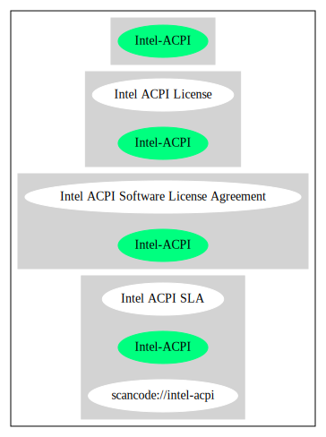

Key |
Value |
|---|---|
Fullname |
Intel ACPI Software License Agreement |
Shortname |
Intel-ACPI |
Rating |
Unknown, probably Attention or Stop or No-Go |
Classification |
NoCopyleft |
Other Names:
scancode://intel-acpi
Intel ACPI SLA
“Per Fedora, this license is no longer available at its original URL http://www.intel.com/technology/iapc/acpi/license2.htm. A copy was taken from the last available version at archive.org. ” (source: Scancode)
Homepage: https://fedoraproject.org/wiki/Licensing/Intel_ACPI_Software_License_Agreement
SPDX: http://spdx.org/licenses/Intel-ACPI.json
ACPI - Software License Agreement
Software License Agreement IMPORTANT - READ BEFORE COPYING, INSTALLING
OR USING.
Do not use or load this software and any associated materials
(collectively, the "Software") until you have carefully read the
following terms and conditions. By loading or using the Software, you
agree to the terms of this Agreement. If you do not wish to so agree, do
not install or use the Software.
1. COPYRIGHT NOTICE Some or all of this work - Copyright © 1999-2005,
Intel Corp. All rights reserved.
2. LICENSE
2.1. This is your license from Intel Corp. under its intellectual
property rights. You may have additional license terms from the party
that provided you this software, covering your right to use that party's
intellectual property rights.
2.2. Intel grants, free of charge, to any person ("Licensee") obtaining
a copy of the source code appearing in this file ("Covered Code") an
irrevocable, perpetual, worldwide license under Intel's copyrights in
the base code distributed originally by Intel ("Original Intel Code") to
copy, make derivatives, distribute, use and display any portion of the
Covered Code in any form, with the right to sublicense such rights; and
2.3. Intel grants Licensee a non-exclusive and non-transferable patent
license (with the right to sublicense), under only those claims of Intel
patents that are infringed by the Original Intel Code, to make, use,
sell, offer to sell, and import the Covered Code and derivative works
thereof solely to the minimum extent necessary to exercise the above
copyright license, and in no event shall the patent license extend to
any additions to or modifications of the Original Intel Code. No other
license or right is granted directly or by implication, estoppel or
otherwise; The above copyright and patent license is granted only if the
following conditions are met:
3. CONDITIONS
3.1. Redistribution of Source with Rights to Further Distribute Source.
Redistribution of source code of any substantial portion of the Covered
Code or modification with rights to further distribute source must
include the above Copyright Notice, the above License, this list of
Conditions, and the following Disclaimer and Export Compliance
provision. In addition, Licensee must cause all Covered Code to which
Licensee contributes to contain a file documenting the changes Licensee
made to create that Covered Code and the date of any change. Licensee
must include in that file the documentation of any changes made by any
predecessor Licensee. Licensee must include a prominent statement that
the modification is derived, directly or indirectly, from Original Intel
Code.
3.2. Redistribution of Source with no Rights to Further Distribute
Source. Redistribution of source code of any substantial portion of the
Covered Code or modification without rights to further distribute source
must include the following Disclaimer and Export Compliance provision in
the documentation and/or other materials provided with distribution. In
addition, Licensee may not authorize further sublicense of source of any
portion of the Covered Code, and must include terms to the effect that
the license from Licensee to its licensee is limited to the intellectual
property embodied in the software Licensee provides to its licensee, and
not to intellectual property embodied in modifications its licensee may
make.
3.3. Redistribution of Executable. Redistribution in executable form of
any substantial portion of the Covered Code or modification must
reproduce the above Copyright Notice, and the following Disclaimer and
Export Compliance provision in the documentation and/or other materials
provided with the distribution.
3.4. Intel retains all right, title, and interest in and to the Original
Intel Code.
3.5. Neither the name Intel nor any other trademark owned or controlled
by Intel shall be used in advertising or otherwise to promote the sale,
use or other dealings in products derived from or relating to the
Covered Code without prior written authorization from Intel.
4. DISCLAIMER AND EXPORT COMPLIANCE
4.1. INTEL MAKES NO WARRANTY OF ANY KIND REGARDING ANY SOFTWARE PROVIDED
HERE. ANY SOFTWARE ORIGINATING FROM INTEL OR DERIVED FROM INTEL SOFTWARE
IS PROVIDED "AS IS," AND INTEL WILL NOT PROVIDE ANY SUPPORT, ASSISTANCE,
INSTALLATION, TRAINING OR OTHER SERVICES. INTEL WILL NOT PROVIDE ANY
UPDATES, ENHANCEMENTS OR EXTENSIONS. INTEL SPECIFICALLY DISCLAIMS ANY
IMPLIED WARRANTIES OF MERCHANTABILITY, NONINFRINGEMENT AND FITNESS FOR A
PARTICULAR PURPOSE.
4.2. IN NO EVENT SHALL INTEL HAVE ANY LIABILITY TO LICENSEE, ITS
LICENSEES OR ANY OTHER THIRD PARTY, FOR ANY LOST PROFITS, LOST DATA,
LOSS OF USE OR COSTS OF PROCUREMENT OF SUBSTITUTE GOODS OR SERVICES, OR
FOR ANY INDIRECT, SPECIAL OR CONSEQUENTIAL DAMAGES ARISING OUT OF THIS
AGREEMENT, UNDER ANY CAUSE OF ACTION OR THEORY OF LIABILITY, AND
IRRESPECTIVE OF WHETHER INTEL HAS ADVANCE NOTICE OF THE POSSIBILITY OF
SUCH DAMAGES. THESE LIMITATIONS SHALL APPLY NOTWITHSTANDING THE FAILURE
OF THE ESSENTIAL PURPOSE OF ANY LIMITED REMEDY.
4.3. Licensee shall not export, either directly or indirectly, any of
this software or system incorporating such software without first
obtaining any required license or other approval from the U. S.
Department of Commerce or any other agency or department of the United
States Government. In the event Licensee exports any such software from
the United States or re-exports any such software from a foreign
destination, Licensee shall ensure that the distribution and export/re-
export of the software is in compliance with all laws, regulations,
orders, or other restrictions of the U.S. Export Administration
Regulations. Licensee agrees that neither it nor any of its subsidiaries
will export/re-export any technical data, process, software, or service,
directly or indirectly, to any country for which the United States
government or any agency thereof requires an export license, other
governmental approval, or letter of assurance, without first obtaining
such license, approval or letter.{
"__impliedNames": [
"Intel-ACPI",
"Intel ACPI Software License Agreement",
"scancode://intel-acpi",
"Intel ACPI SLA"
],
"__impliedId": "Intel-ACPI",
"__impliedComments": [
[
"Scancode",
[
"Per Fedora, this license is no longer available at its original URL\nhttp://www.intel.com/technology/iapc/acpi/license2.htm. A copy was taken\nfrom the last available version at archive.org.\n"
]
]
],
"facts": {
"SPDX": {
"isSPDXLicenseDeprecated": false,
"spdxFullName": "Intel ACPI Software License Agreement",
"spdxDetailsURL": "http://spdx.org/licenses/Intel-ACPI.json",
"_sourceURL": "https://spdx.org/licenses/Intel-ACPI.html",
"spdxLicIsOSIApproved": false,
"spdxSeeAlso": [
"https://fedoraproject.org/wiki/Licensing/Intel_ACPI_Software_License_Agreement"
],
"_implications": {
"__impliedNames": [
"Intel-ACPI",
"Intel ACPI Software License Agreement"
],
"__impliedId": "Intel-ACPI",
"__isOsiApproved": false,
"__impliedURLs": [
[
"SPDX",
"http://spdx.org/licenses/Intel-ACPI.json"
],
[
null,
"https://fedoraproject.org/wiki/Licensing/Intel_ACPI_Software_License_Agreement"
]
]
},
"spdxLicenseId": "Intel-ACPI"
},
"Scancode": {
"otherUrls": null,
"homepageUrl": "https://fedoraproject.org/wiki/Licensing/Intel_ACPI_Software_License_Agreement",
"shortName": "Intel ACPI SLA",
"textUrls": null,
"text": "ACPI - Software License Agreement\n\nSoftware License Agreement IMPORTANT - READ BEFORE COPYING, INSTALLING\nOR USING.\n\nDo not use or load this software and any associated materials\n(collectively, the \"Software\") until you have carefully read the\nfollowing terms and conditions. By loading or using the Software, you\nagree to the terms of this Agreement. If you do not wish to so agree, do\nnot install or use the Software.\n\n1. COPYRIGHT NOTICE Some or all of this work - Copyright é 1999-2005,\nIntel Corp. All rights reserved.\n\n2. LICENSE\n\n2.1. This is your license from Intel Corp. under its intellectual\nproperty rights. You may have additional license terms from the party\nthat provided you this software, covering your right to use that party's\nintellectual property rights.\n\n2.2. Intel grants, free of charge, to any person (\"Licensee\") obtaining\na copy of the source code appearing in this file (\"Covered Code\") an\nirrevocable, perpetual, worldwide license under Intel's copyrights in\nthe base code distributed originally by Intel (\"Original Intel Code\") to\ncopy, make derivatives, distribute, use and display any portion of the\nCovered Code in any form, with the right to sublicense such rights; and\n\n2.3. Intel grants Licensee a non-exclusive and non-transferable patent\nlicense (with the right to sublicense), under only those claims of Intel\npatents that are infringed by the Original Intel Code, to make, use,\nsell, offer to sell, and import the Covered Code and derivative works\nthereof solely to the minimum extent necessary to exercise the above\ncopyright license, and in no event shall the patent license extend to\nany additions to or modifications of the Original Intel Code. No other\nlicense or right is granted directly or by implication, estoppel or\notherwise; The above copyright and patent license is granted only if the\nfollowing conditions are met:\n\n3. CONDITIONS\n\n3.1. Redistribution of Source with Rights to Further Distribute Source.\nRedistribution of source code of any substantial portion of the Covered\nCode or modification with rights to further distribute source must\ninclude the above Copyright Notice, the above License, this list of\nConditions, and the following Disclaimer and Export Compliance\nprovision. In addition, Licensee must cause all Covered Code to which\nLicensee contributes to contain a file documenting the changes Licensee\nmade to create that Covered Code and the date of any change. Licensee\nmust include in that file the documentation of any changes made by any\npredecessor Licensee. Licensee must include a prominent statement that\nthe modification is derived, directly or indirectly, from Original Intel\nCode.\n\n3.2. Redistribution of Source with no Rights to Further Distribute\nSource. Redistribution of source code of any substantial portion of the\nCovered Code or modification without rights to further distribute source\nmust include the following Disclaimer and Export Compliance provision in\nthe documentation and/or other materials provided with distribution. In\naddition, Licensee may not authorize further sublicense of source of any\nportion of the Covered Code, and must include terms to the effect that\nthe license from Licensee to its licensee is limited to the intellectual\nproperty embodied in the software Licensee provides to its licensee, and\nnot to intellectual property embodied in modifications its licensee may\nmake.\n\n3.3. Redistribution of Executable. Redistribution in executable form of\nany substantial portion of the Covered Code or modification must\nreproduce the above Copyright Notice, and the following Disclaimer and\nExport Compliance provision in the documentation and/or other materials\nprovided with the distribution.\n\n3.4. Intel retains all right, title, and interest in and to the Original\nIntel Code.\n\n3.5. Neither the name Intel nor any other trademark owned or controlled\nby Intel shall be used in advertising or otherwise to promote the sale,\nuse or other dealings in products derived from or relating to the\nCovered Code without prior written authorization from Intel.\n\n4. DISCLAIMER AND EXPORT COMPLIANCE\n\n4.1. INTEL MAKES NO WARRANTY OF ANY KIND REGARDING ANY SOFTWARE PROVIDED\nHERE. ANY SOFTWARE ORIGINATING FROM INTEL OR DERIVED FROM INTEL SOFTWARE\nIS PROVIDED \"AS IS,\" AND INTEL WILL NOT PROVIDE ANY SUPPORT, ASSISTANCE,\nINSTALLATION, TRAINING OR OTHER SERVICES. INTEL WILL NOT PROVIDE ANY\nUPDATES, ENHANCEMENTS OR EXTENSIONS. INTEL SPECIFICALLY DISCLAIMS ANY\nIMPLIED WARRANTIES OF MERCHANTABILITY, NONINFRINGEMENT AND FITNESS FOR A\nPARTICULAR PURPOSE.\n\n4.2. IN NO EVENT SHALL INTEL HAVE ANY LIABILITY TO LICENSEE, ITS\nLICENSEES OR ANY OTHER THIRD PARTY, FOR ANY LOST PROFITS, LOST DATA,\nLOSS OF USE OR COSTS OF PROCUREMENT OF SUBSTITUTE GOODS OR SERVICES, OR\nFOR ANY INDIRECT, SPECIAL OR CONSEQUENTIAL DAMAGES ARISING OUT OF THIS\nAGREEMENT, UNDER ANY CAUSE OF ACTION OR THEORY OF LIABILITY, AND\nIRRESPECTIVE OF WHETHER INTEL HAS ADVANCE NOTICE OF THE POSSIBILITY OF\nSUCH DAMAGES. THESE LIMITATIONS SHALL APPLY NOTWITHSTANDING THE FAILURE\nOF THE ESSENTIAL PURPOSE OF ANY LIMITED REMEDY.\n\n4.3. Licensee shall not export, either directly or indirectly, any of\nthis software or system incorporating such software without first\nobtaining any required license or other approval from the U. S.\nDepartment of Commerce or any other agency or department of the United\nStates Government. In the event Licensee exports any such software from\nthe United States or re-exports any such software from a foreign\ndestination, Licensee shall ensure that the distribution and export/re-\nexport of the software is in compliance with all laws, regulations,\norders, or other restrictions of the U.S. Export Administration\nRegulations. Licensee agrees that neither it nor any of its subsidiaries\nwill export/re-export any technical data, process, software, or service,\ndirectly or indirectly, to any country for which the United States\ngovernment or any agency thereof requires an export license, other\ngovernmental approval, or letter of assurance, without first obtaining\nsuch license, approval or letter.",
"category": "Permissive",
"osiUrl": null,
"owner": "Intel Corporation",
"_sourceURL": "https://github.com/nexB/scancode-toolkit/blob/develop/src/licensedcode/data/licenses/intel-acpi.yml",
"key": "intel-acpi",
"name": "Intel ACPI Software License Agreement",
"spdxId": "Intel-ACPI",
"notes": "Per Fedora, this license is no longer available at its original URL\nhttp://www.intel.com/technology/iapc/acpi/license2.htm. A copy was taken\nfrom the last available version at archive.org.\n",
"_implications": {
"__impliedNames": [
"scancode://intel-acpi",
"Intel ACPI SLA",
"Intel-ACPI"
],
"__impliedId": "Intel-ACPI",
"__impliedComments": [
[
"Scancode",
[
"Per Fedora, this license is no longer available at its original URL\nhttp://www.intel.com/technology/iapc/acpi/license2.htm. A copy was taken\nfrom the last available version at archive.org.\n"
]
]
],
"__impliedCopyleft": [
[
"Scancode",
"NoCopyleft"
]
],
"__calculatedCopyleft": "NoCopyleft",
"__impliedText": "ACPI - Software License Agreement\n\nSoftware License Agreement IMPORTANT - READ BEFORE COPYING, INSTALLING\nOR USING.\n\nDo not use or load this software and any associated materials\n(collectively, the \"Software\") until you have carefully read the\nfollowing terms and conditions. By loading or using the Software, you\nagree to the terms of this Agreement. If you do not wish to so agree, do\nnot install or use the Software.\n\n1. COPYRIGHT NOTICE Some or all of this work - Copyright © 1999-2005,\nIntel Corp. All rights reserved.\n\n2. LICENSE\n\n2.1. This is your license from Intel Corp. under its intellectual\nproperty rights. You may have additional license terms from the party\nthat provided you this software, covering your right to use that party's\nintellectual property rights.\n\n2.2. Intel grants, free of charge, to any person (\"Licensee\") obtaining\na copy of the source code appearing in this file (\"Covered Code\") an\nirrevocable, perpetual, worldwide license under Intel's copyrights in\nthe base code distributed originally by Intel (\"Original Intel Code\") to\ncopy, make derivatives, distribute, use and display any portion of the\nCovered Code in any form, with the right to sublicense such rights; and\n\n2.3. Intel grants Licensee a non-exclusive and non-transferable patent\nlicense (with the right to sublicense), under only those claims of Intel\npatents that are infringed by the Original Intel Code, to make, use,\nsell, offer to sell, and import the Covered Code and derivative works\nthereof solely to the minimum extent necessary to exercise the above\ncopyright license, and in no event shall the patent license extend to\nany additions to or modifications of the Original Intel Code. No other\nlicense or right is granted directly or by implication, estoppel or\notherwise; The above copyright and patent license is granted only if the\nfollowing conditions are met:\n\n3. CONDITIONS\n\n3.1. Redistribution of Source with Rights to Further Distribute Source.\nRedistribution of source code of any substantial portion of the Covered\nCode or modification with rights to further distribute source must\ninclude the above Copyright Notice, the above License, this list of\nConditions, and the following Disclaimer and Export Compliance\nprovision. In addition, Licensee must cause all Covered Code to which\nLicensee contributes to contain a file documenting the changes Licensee\nmade to create that Covered Code and the date of any change. Licensee\nmust include in that file the documentation of any changes made by any\npredecessor Licensee. Licensee must include a prominent statement that\nthe modification is derived, directly or indirectly, from Original Intel\nCode.\n\n3.2. Redistribution of Source with no Rights to Further Distribute\nSource. Redistribution of source code of any substantial portion of the\nCovered Code or modification without rights to further distribute source\nmust include the following Disclaimer and Export Compliance provision in\nthe documentation and/or other materials provided with distribution. In\naddition, Licensee may not authorize further sublicense of source of any\nportion of the Covered Code, and must include terms to the effect that\nthe license from Licensee to its licensee is limited to the intellectual\nproperty embodied in the software Licensee provides to its licensee, and\nnot to intellectual property embodied in modifications its licensee may\nmake.\n\n3.3. Redistribution of Executable. Redistribution in executable form of\nany substantial portion of the Covered Code or modification must\nreproduce the above Copyright Notice, and the following Disclaimer and\nExport Compliance provision in the documentation and/or other materials\nprovided with the distribution.\n\n3.4. Intel retains all right, title, and interest in and to the Original\nIntel Code.\n\n3.5. Neither the name Intel nor any other trademark owned or controlled\nby Intel shall be used in advertising or otherwise to promote the sale,\nuse or other dealings in products derived from or relating to the\nCovered Code without prior written authorization from Intel.\n\n4. DISCLAIMER AND EXPORT COMPLIANCE\n\n4.1. INTEL MAKES NO WARRANTY OF ANY KIND REGARDING ANY SOFTWARE PROVIDED\nHERE. ANY SOFTWARE ORIGINATING FROM INTEL OR DERIVED FROM INTEL SOFTWARE\nIS PROVIDED \"AS IS,\" AND INTEL WILL NOT PROVIDE ANY SUPPORT, ASSISTANCE,\nINSTALLATION, TRAINING OR OTHER SERVICES. INTEL WILL NOT PROVIDE ANY\nUPDATES, ENHANCEMENTS OR EXTENSIONS. INTEL SPECIFICALLY DISCLAIMS ANY\nIMPLIED WARRANTIES OF MERCHANTABILITY, NONINFRINGEMENT AND FITNESS FOR A\nPARTICULAR PURPOSE.\n\n4.2. IN NO EVENT SHALL INTEL HAVE ANY LIABILITY TO LICENSEE, ITS\nLICENSEES OR ANY OTHER THIRD PARTY, FOR ANY LOST PROFITS, LOST DATA,\nLOSS OF USE OR COSTS OF PROCUREMENT OF SUBSTITUTE GOODS OR SERVICES, OR\nFOR ANY INDIRECT, SPECIAL OR CONSEQUENTIAL DAMAGES ARISING OUT OF THIS\nAGREEMENT, UNDER ANY CAUSE OF ACTION OR THEORY OF LIABILITY, AND\nIRRESPECTIVE OF WHETHER INTEL HAS ADVANCE NOTICE OF THE POSSIBILITY OF\nSUCH DAMAGES. THESE LIMITATIONS SHALL APPLY NOTWITHSTANDING THE FAILURE\nOF THE ESSENTIAL PURPOSE OF ANY LIMITED REMEDY.\n\n4.3. Licensee shall not export, either directly or indirectly, any of\nthis software or system incorporating such software without first\nobtaining any required license or other approval from the U. S.\nDepartment of Commerce or any other agency or department of the United\nStates Government. In the event Licensee exports any such software from\nthe United States or re-exports any such software from a foreign\ndestination, Licensee shall ensure that the distribution and export/re-\nexport of the software is in compliance with all laws, regulations,\norders, or other restrictions of the U.S. Export Administration\nRegulations. Licensee agrees that neither it nor any of its subsidiaries\nwill export/re-export any technical data, process, software, or service,\ndirectly or indirectly, to any country for which the United States\ngovernment or any agency thereof requires an export license, other\ngovernmental approval, or letter of assurance, without first obtaining\nsuch license, approval or letter.",
"__impliedURLs": [
[
"Homepage",
"https://fedoraproject.org/wiki/Licensing/Intel_ACPI_Software_License_Agreement"
]
]
}
}
},
"__impliedCopyleft": [
[
"Scancode",
"NoCopyleft"
]
],
"__calculatedCopyleft": "NoCopyleft",
"__isOsiApproved": false,
"__impliedText": "ACPI - Software License Agreement\n\nSoftware License Agreement IMPORTANT - READ BEFORE COPYING, INSTALLING\nOR USING.\n\nDo not use or load this software and any associated materials\n(collectively, the \"Software\") until you have carefully read the\nfollowing terms and conditions. By loading or using the Software, you\nagree to the terms of this Agreement. If you do not wish to so agree, do\nnot install or use the Software.\n\n1. COPYRIGHT NOTICE Some or all of this work - Copyright © 1999-2005,\nIntel Corp. All rights reserved.\n\n2. LICENSE\n\n2.1. This is your license from Intel Corp. under its intellectual\nproperty rights. You may have additional license terms from the party\nthat provided you this software, covering your right to use that party's\nintellectual property rights.\n\n2.2. Intel grants, free of charge, to any person (\"Licensee\") obtaining\na copy of the source code appearing in this file (\"Covered Code\") an\nirrevocable, perpetual, worldwide license under Intel's copyrights in\nthe base code distributed originally by Intel (\"Original Intel Code\") to\ncopy, make derivatives, distribute, use and display any portion of the\nCovered Code in any form, with the right to sublicense such rights; and\n\n2.3. Intel grants Licensee a non-exclusive and non-transferable patent\nlicense (with the right to sublicense), under only those claims of Intel\npatents that are infringed by the Original Intel Code, to make, use,\nsell, offer to sell, and import the Covered Code and derivative works\nthereof solely to the minimum extent necessary to exercise the above\ncopyright license, and in no event shall the patent license extend to\nany additions to or modifications of the Original Intel Code. No other\nlicense or right is granted directly or by implication, estoppel or\notherwise; The above copyright and patent license is granted only if the\nfollowing conditions are met:\n\n3. CONDITIONS\n\n3.1. Redistribution of Source with Rights to Further Distribute Source.\nRedistribution of source code of any substantial portion of the Covered\nCode or modification with rights to further distribute source must\ninclude the above Copyright Notice, the above License, this list of\nConditions, and the following Disclaimer and Export Compliance\nprovision. In addition, Licensee must cause all Covered Code to which\nLicensee contributes to contain a file documenting the changes Licensee\nmade to create that Covered Code and the date of any change. Licensee\nmust include in that file the documentation of any changes made by any\npredecessor Licensee. Licensee must include a prominent statement that\nthe modification is derived, directly or indirectly, from Original Intel\nCode.\n\n3.2. Redistribution of Source with no Rights to Further Distribute\nSource. Redistribution of source code of any substantial portion of the\nCovered Code or modification without rights to further distribute source\nmust include the following Disclaimer and Export Compliance provision in\nthe documentation and/or other materials provided with distribution. In\naddition, Licensee may not authorize further sublicense of source of any\nportion of the Covered Code, and must include terms to the effect that\nthe license from Licensee to its licensee is limited to the intellectual\nproperty embodied in the software Licensee provides to its licensee, and\nnot to intellectual property embodied in modifications its licensee may\nmake.\n\n3.3. Redistribution of Executable. Redistribution in executable form of\nany substantial portion of the Covered Code or modification must\nreproduce the above Copyright Notice, and the following Disclaimer and\nExport Compliance provision in the documentation and/or other materials\nprovided with the distribution.\n\n3.4. Intel retains all right, title, and interest in and to the Original\nIntel Code.\n\n3.5. Neither the name Intel nor any other trademark owned or controlled\nby Intel shall be used in advertising or otherwise to promote the sale,\nuse or other dealings in products derived from or relating to the\nCovered Code without prior written authorization from Intel.\n\n4. DISCLAIMER AND EXPORT COMPLIANCE\n\n4.1. INTEL MAKES NO WARRANTY OF ANY KIND REGARDING ANY SOFTWARE PROVIDED\nHERE. ANY SOFTWARE ORIGINATING FROM INTEL OR DERIVED FROM INTEL SOFTWARE\nIS PROVIDED \"AS IS,\" AND INTEL WILL NOT PROVIDE ANY SUPPORT, ASSISTANCE,\nINSTALLATION, TRAINING OR OTHER SERVICES. INTEL WILL NOT PROVIDE ANY\nUPDATES, ENHANCEMENTS OR EXTENSIONS. INTEL SPECIFICALLY DISCLAIMS ANY\nIMPLIED WARRANTIES OF MERCHANTABILITY, NONINFRINGEMENT AND FITNESS FOR A\nPARTICULAR PURPOSE.\n\n4.2. IN NO EVENT SHALL INTEL HAVE ANY LIABILITY TO LICENSEE, ITS\nLICENSEES OR ANY OTHER THIRD PARTY, FOR ANY LOST PROFITS, LOST DATA,\nLOSS OF USE OR COSTS OF PROCUREMENT OF SUBSTITUTE GOODS OR SERVICES, OR\nFOR ANY INDIRECT, SPECIAL OR CONSEQUENTIAL DAMAGES ARISING OUT OF THIS\nAGREEMENT, UNDER ANY CAUSE OF ACTION OR THEORY OF LIABILITY, AND\nIRRESPECTIVE OF WHETHER INTEL HAS ADVANCE NOTICE OF THE POSSIBILITY OF\nSUCH DAMAGES. THESE LIMITATIONS SHALL APPLY NOTWITHSTANDING THE FAILURE\nOF THE ESSENTIAL PURPOSE OF ANY LIMITED REMEDY.\n\n4.3. Licensee shall not export, either directly or indirectly, any of\nthis software or system incorporating such software without first\nobtaining any required license or other approval from the U. S.\nDepartment of Commerce or any other agency or department of the United\nStates Government. In the event Licensee exports any such software from\nthe United States or re-exports any such software from a foreign\ndestination, Licensee shall ensure that the distribution and export/re-\nexport of the software is in compliance with all laws, regulations,\norders, or other restrictions of the U.S. Export Administration\nRegulations. Licensee agrees that neither it nor any of its subsidiaries\nwill export/re-export any technical data, process, software, or service,\ndirectly or indirectly, to any country for which the United States\ngovernment or any agency thereof requires an export license, other\ngovernmental approval, or letter of assurance, without first obtaining\nsuch license, approval or letter.",
"__impliedURLs": [
[
"SPDX",
"http://spdx.org/licenses/Intel-ACPI.json"
],
[
null,
"https://fedoraproject.org/wiki/Licensing/Intel_ACPI_Software_License_Agreement"
],
[
"Homepage",
"https://fedoraproject.org/wiki/Licensing/Intel_ACPI_Software_License_Agreement"
]
]
}